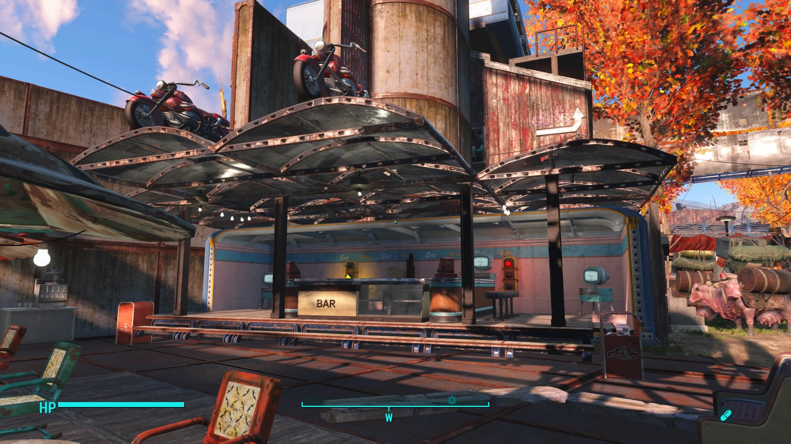
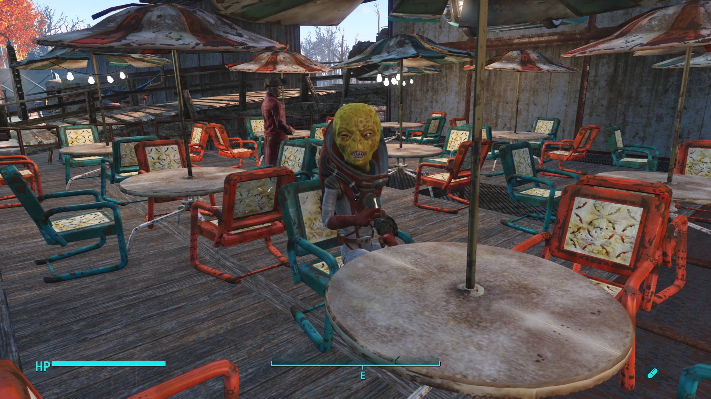
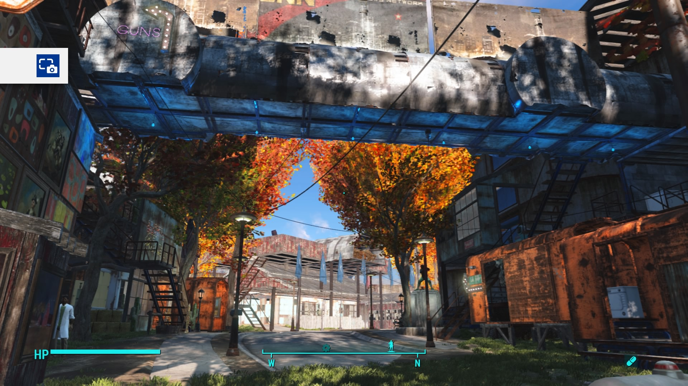
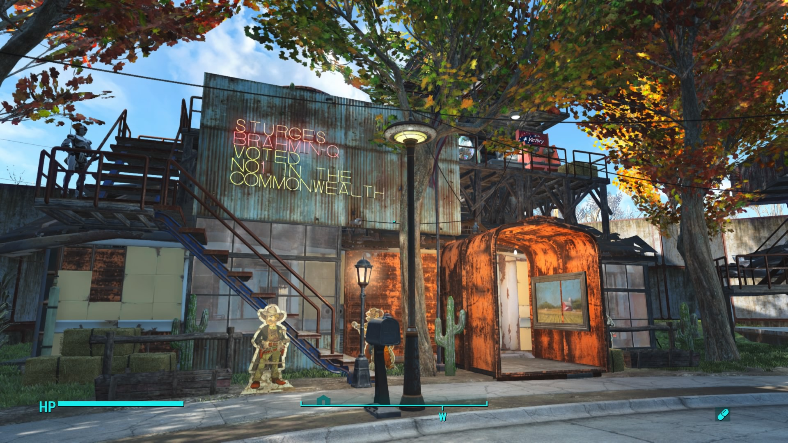
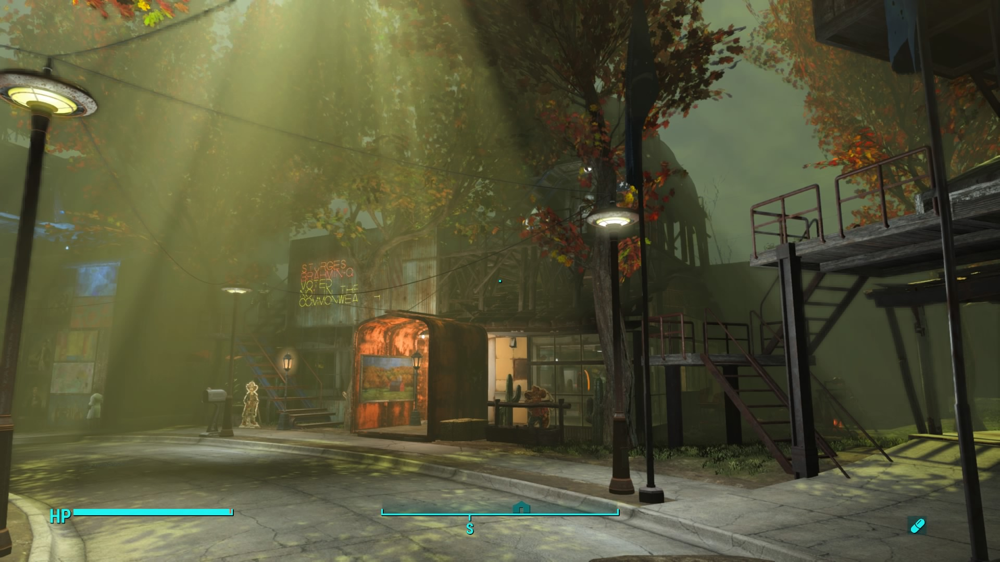
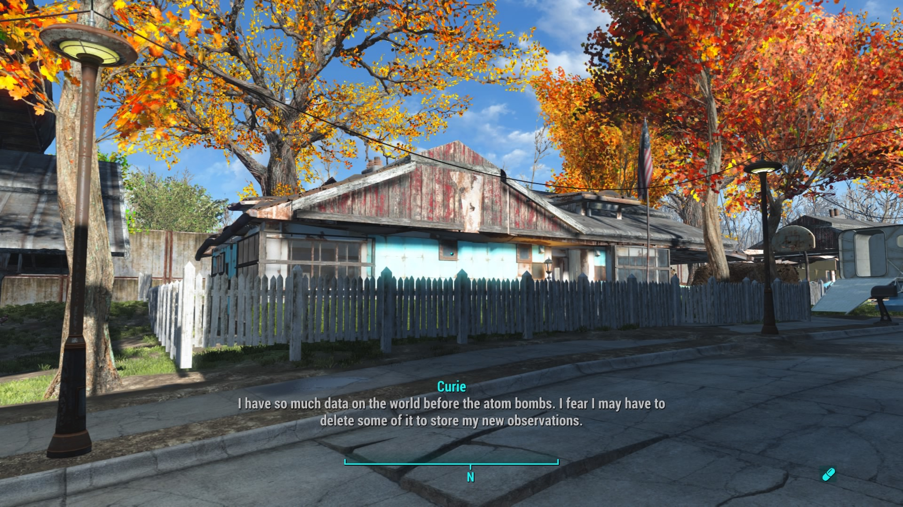
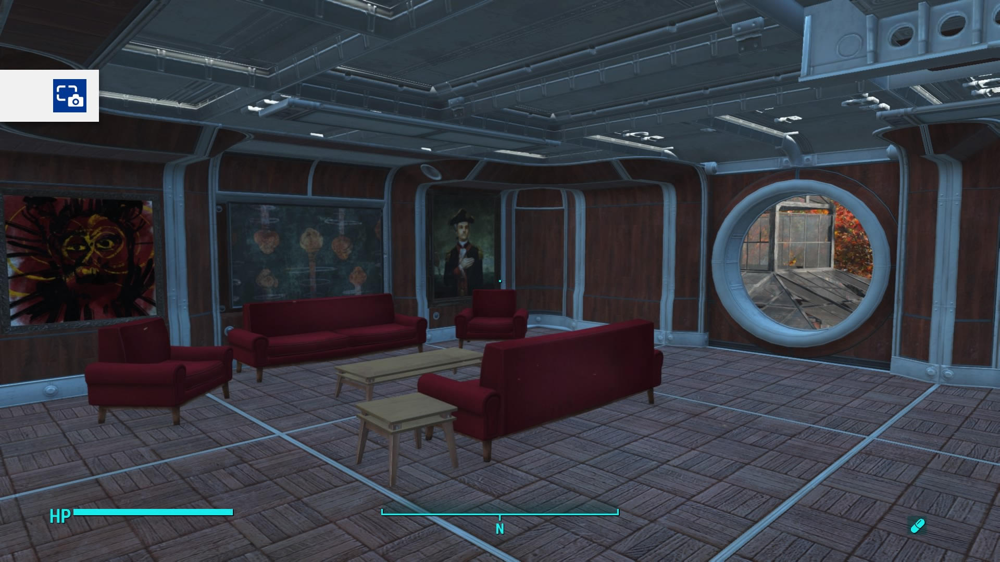
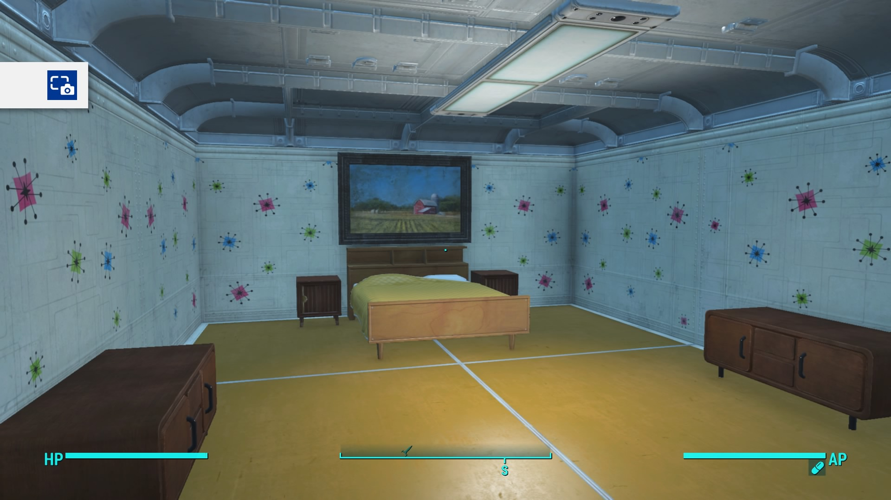
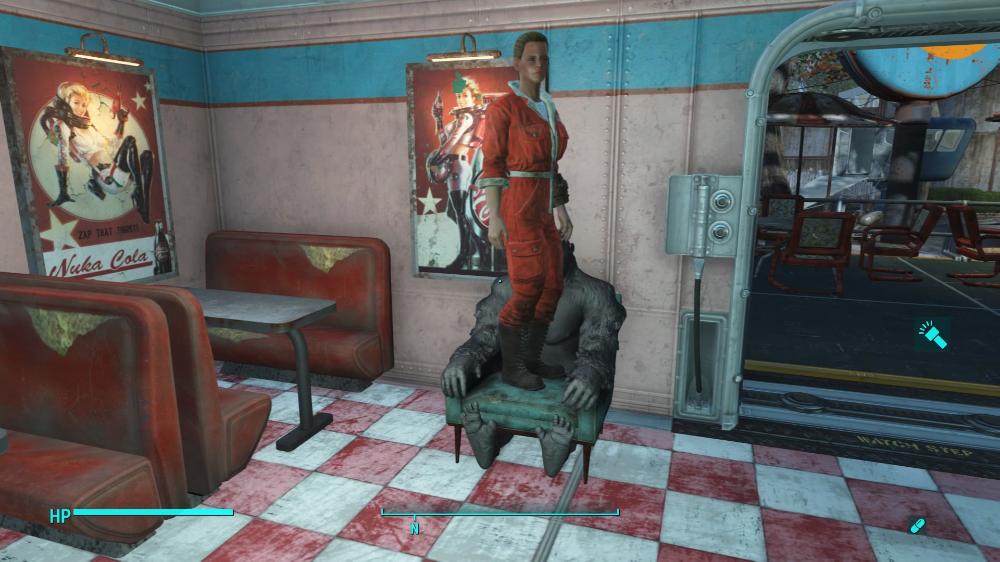

I’ve spent a lot of time playing Fallout 4. Most of that time has been spent crafting things, such as attempting to construct a memory circuit. But by far the largest time-sink has been rebuilding Sanctuary.
I did this all on the PS4, with mods that enable more of the in game items in building mode. As should be immediately obvious if you’ve ever played the PS4 version, this town is massively over the settlement limit size. I managed to do this by finding a series of size-hacks. Originally anything you dropped and then removed would lower the settlement size; however, only a few days into this an update broke that. The second method I found was to remove a wire while in building mode with the desired item already selected. Once the wire is removed, you can place the item. During the build, the town was littered with conduits placed for my convenience.
The following is a brief tour.
Welcome to town. Check in with security on the bridge first.
Start your visit at our charming diner.


Just one of the regulars.
The Sanctuary Inn greets tired travelers at the gates with its comfortable rooms.
The finest hotel in the wasteland is a hostel.
Next door is the only Laundromat you'll find in the wasteland.
Get a haircut while you're here in town.
The Barn is a great place to furnish your house, get a health checkup, and purchase and test the latest armaments.
Need a new bedroom set or a new outfit?
A root canal from a robot?
What you really want is a gun though, isn't it?
Well Blood Bath and Beyond is happy to help.
Need some new armor?

Let's continue in.

Make sure you stop in at Sturges Brahmin-Q, Voted No1 in the Commonwealth by, uh, well someone...

Join the Minute Men and defend the town!
Or apply for a job with the Institute at their newest above ground office complex.
Host your next conference!
Education is important.

Be sure to checkout your restored pre-war home.
The dogs live well in Sanctuary.
Checkout the Community Center below our high-end condos.


The nicest toilet in the wasteland.
Be sure to checkout NukaCafe.
Some of the NukaCafe food is grown up-stairs.
Some folks grown their own food above their homes.
Make sure you reserve your Vault Space today, in case everything gets nuked again.
We have plenty of power.
Make sure you check out the Institute Pavilion.
Now Performing: Death of a Caravan
Grab a drink during the show.
Let the kids play while the show goes on.

She's so excited she is standing in a chair.